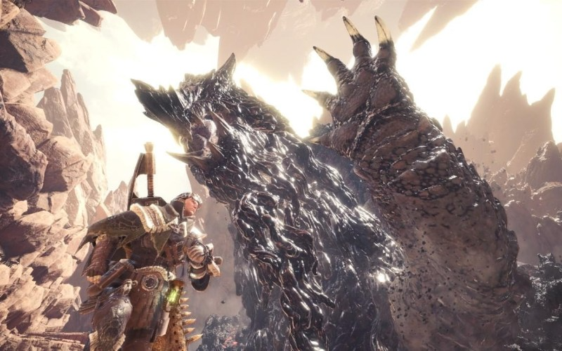

RPGs
RPGs is a very wide genre of games That can describe a wide variety of games. An RPG or Role Playing Game can describe most games but to me as a genre it is a facinating one.
To me and RPG is a game where you the player put yourself in place of the character you play as whether you made that character or it is a character made by the developers you put yourself in their shoes and experience rhe world they live in and immerse yourself exploring a new land.
Monster Hunter World

Monster Hunter is an old series starting back in 2004, the game I enjoy the most in the series is Monster Hunter World. This is the 3rd newest game in the series released in 2018 by CAPCOM it was very successful on lauch and its DLC released a year later more than doubled the games content growing support for it even more.
In the game you have joined the 5th fleet expidition to the new world that was found. After months of saild you arrive in the new World only for your ship to be destroyed by The Elder Dragon the size of a mountain Zorah Magdaros you eventualy make it to main land and your expidtion sets up camp. You as a hunter your job is to explore the new world and to capture and hunt the monsters roaming the island to study and figure out why the monsters are going mad.
Death Stranding
Death Stranding by Hideo Kojima developed by Kojima Productions released November 8th 2019 to critical acclaim. The game tells a compelling story with a almost cinematic gameplay experience.
The game follows the story of courier Sam Porter Bridges years after cataclysmic event called the Death Stranding causing destructive beings called BTs that are the link between life and the afterlife to roam the earth. The game starts with the Distruction of the rebuild City and follows Sam as he delivers packages and rebuilds the connections across the country rebuilding amarica.